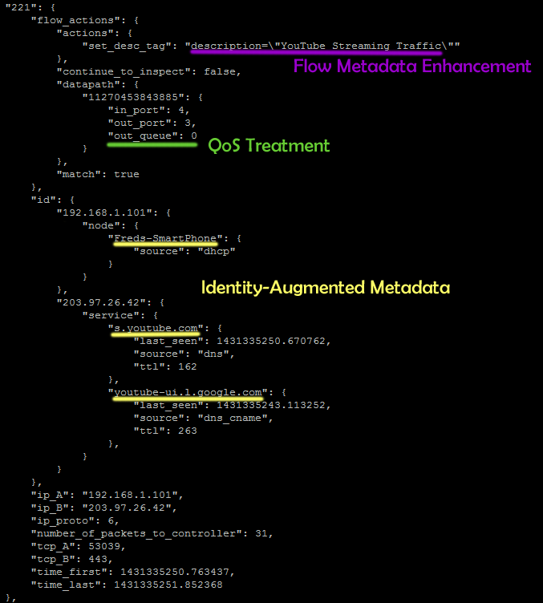

Introduction¶
The nmeta (pronounced en-meta) project is founded on the belief that innovation in networks requires a foundation layer of knowledge about both the participants and their types of conversation.

Today, networks generally have only a limited view of participants and conversation types

The goal of the nmeta project is to produce network metadata enriched with participant identities and conversation types to provide a foundation for innovation in networking.
The production of enriched network metadata requires policy-based control, and ability to adapt to new purposes through extensibility.
Enriched network metadata has a number of uses, including classifying flows for QoS, billing, traffic engineering, troubleshooting and security.
Nmeta is a research platform for traffic classification on Software Defined Networking (SDN). It runs on top of the Ryu SDN controller (see: http://osrg.github.io/ryu/).
Design Philosophy¶
The collection and enrichment of flow metadata should be decoupled from systems that consume it. This abstraction is intended to encourage the development of innovative new uses for flow metadata.
Policy is used to control how traffic classifiers of many types (i.e. this is a multiclassifier system) are employed and what actions they can take.
Flow metadata can be enriched by the policy-controlled classifiers - i.e. extra data can be added.
The system is designed to work in an online mode such that classifications are made in a timely manner so that consuming systems may take actions while the flow is still newly active.
Privacy Considerations¶
Collecting network metadata brings with it ethical and legal considerations around privacy. Please ensure that you have permission to monitor traffic before deploying this software.
Disclaimer¶
This code carries no warrantee whatsoever. Use at your own risk.
How to Contribute¶
Code contributions and suggestions are welcome. Enhancement or bug fixes can be raised as issues through GitHub.
Please get in touch if you want to be added as a contributor to the project:
Email: Nmeta Maintainer